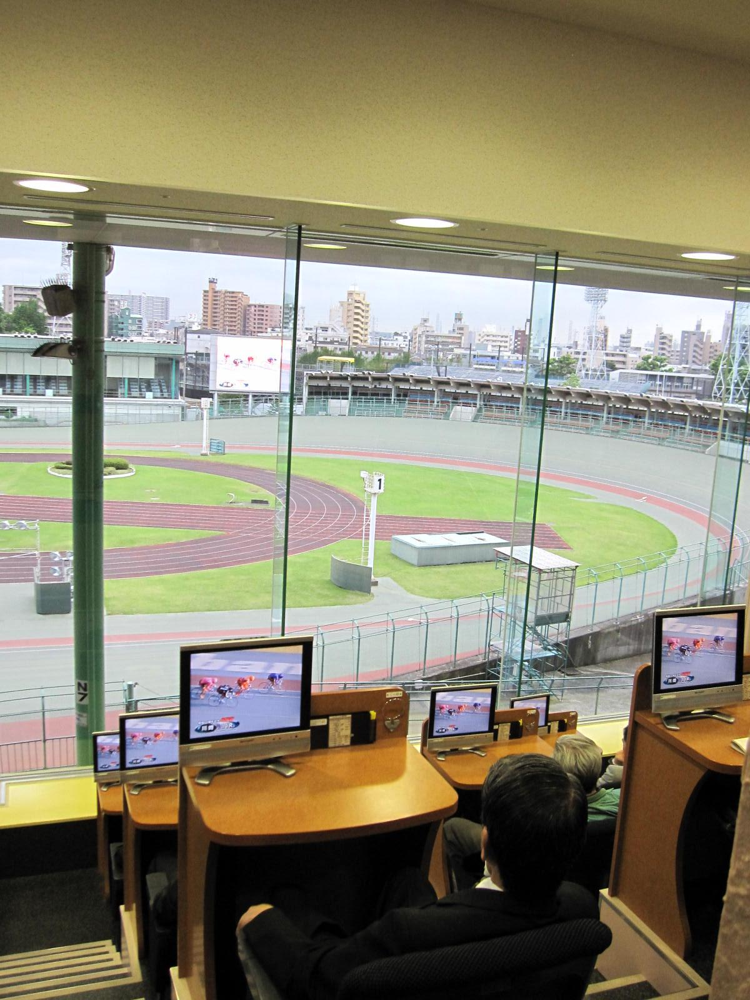

← 原稿一覧未公開の下書き · 会場・観戦 · 執筆 2026-11-20
初めての競輪場。席選びは「何を見たいか」から
走りを近くで見たいのか、全体の動きを追いたいのか。観戦の目的を一つ決めると、場内案内を読む順番も決まります。

川崎競輪場 特別観覧席／川崎市／CC BY 4.0／かわさき魅力ギャラリー。資料写真。 配布元 · 利用条件席の写真で、視線の先を想像する
川崎市の「川崎競輪場 特別観覧席」の写真には、窓越しのバンクと机、モニターが写っています。写真から分かるのは、その撮影位置での設備や眺めです。全席が同じ配置か、現在も同じ設備か、利用料はいくらかまでは、この一枚では判断できません。気になった点を現在の会場案内で確かめるための入口にしましょう。
近さと全体の見やすさを分けて考える
選手が通過する迫力を感じたい時と、複数のラインが動く様子を見たい時では、気になる視点が違います。席を選ぶ時は「目の前の走路」「バンク全体」「映像や表示」の三つを、場内図や写真と照らしてみてください。初観戦なら、一つの場所が自分の目的にどこまで合うかを考えるだけでも、現地での迷いが減ります。
来場前に確認することは、開催日と利用条件
レースを現地で見るつもりなら、その競輪場でレースが行われる日かをまず確認します。場外発売などの営業案内と、現地での開催を混同しないことが大切です。そのうえで入場口、開門時刻、利用できる席、予約の要否、帰りの交通を公式案内で確認します。料金や運行時刻は変わり得るため、この記事には未確認の固定額を載せません。
観戦の記録は、次の楽しみにもなる
見やすかった位置、分からなかった用語、印象に残った動きを短くメモしておくと、次に見るレースの楽しみが増えます。写真撮影をしたい場合は会場の撮影案内を確認し、他の来場者への配慮も忘れずに。車券を買うかどうかと、競技を理解して観戦を楽しむことは分けて考えられます。まず自分が見たい場面を見つけるところから始めてみましょう。
出典・計算の位置付け
公式資料に基づく解説と編集部の読み方提案
関連記事